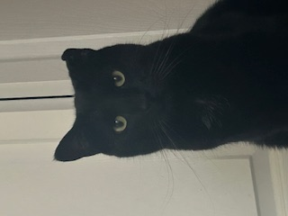

Meet our mascot, Leo the black cat! Leo is the owner's cat, and he is the reason Loonies Café came to life! Leo was found on the streets of Ohio and was brought to Oviedo, Florida. He is a void with attitude, and he will look into your soul. Many believe black cats are bad luck, but at Loonies, black cats are the stars of the show!
Around the café, you will see numerous pictures and posters of Leo! We also offer merch such as shirts, keychains, mugs, and more! Come take a peek and enjoy Leo’s eyes staring into your soul!
